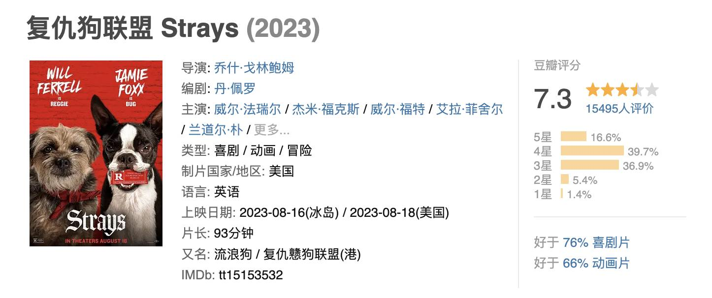
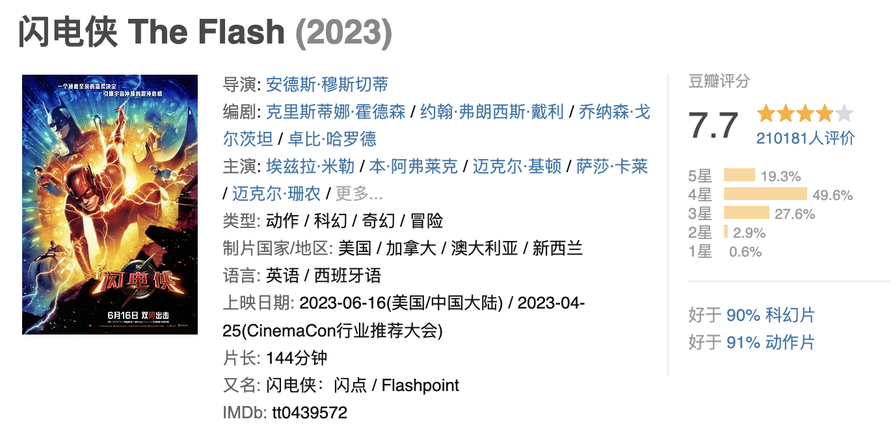
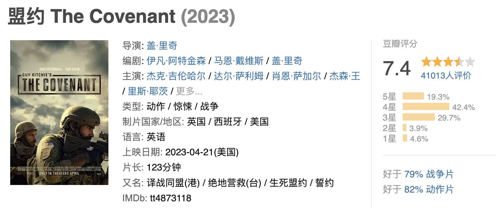

已下载电影列表(2023/10/26)
复仇狗联盟 Strays (2023)
- 该片为真人和CGI结合的R级喜剧片，讲述被遗弃的小狗雷吉和其他流浪狗联手报复前主人的故事。 都说狗狗是人类最好的朋友，但是如果有个狗主人是个大混蛋呢？如果是这样，复仇狗联盟就该集结了。 雷吉（威尔·法瑞尔 配音）是一只天真无邪、乐观活泼的边境㹴犬，尽管它被它的渣男主人道格（威尔·福特 饰）丢弃在大城市的残酷街头，雷吉却仍然相信它最爱的主人绝对不会故意弃养它。但是当雷吉遇到一只老是老爱飙脏话，讲起话来像连珠炮一样快的波士顿㹴犬小虫（杰米·福克斯 配音），一只热爱自由的流浪狗，而且相信只有傻狗才需要主人，雷吉这才终于发现它的狗主人道格一直以来都在虐待它，而且道格是一个没心没肺的人渣。 为了向这种狼心狗肺的狗主人展开复仇，雷吉、小虫和小虫的麻吉——玛吉（艾拉·菲舍尔 配音），一只冰雪聪明的澳洲牧羊犬，然而它的主人却因为又认养了一只小狗狗冷落它；以及亨特（兰道尔·朴 配音），一只患有焦虑症的大丹犬，因为自己是一只情绪支持犬老是觉得压力超大。它们组成复仇狗联盟，然后脑力激荡，想出一个超完美的复仇计划，并且展开一场史诗般的冒险旅程，帮助雷吉找到回家的路，而且最后还要让道格付出代价，那就是逼他咬断他最喜欢身上的一个部位（贴心小暗示：并不是他的脚丫子）。
返回目录页
闪电侠 The Flash (2023)
- 自从成为正义联盟中的一员，闪电侠巴里（埃兹拉·米勒 Ezra Miller 饰）便成为一个日夜忙碌的超级英雄。可是虽然他已经具备了拯救世人的非凡能力，却依旧对自己既定的命运束手无策。父亲弑妻案（朗·里维斯顿 Ron Livingston 饰）复审在即，关键证据又无法有效 佐证。由于之前对战荒原狼时曾短暂超越光速穿越时空，巴里不顾蝙蝠侠（迈克尔·基顿 Michael Keaton 饰）的劝阻，一路穿越到母亲遇害的那一天。他原本以为通过不起眼的小动作能够拯救母亲，却不曾想宇宙因为这个意外转折而发生蝴蝶效应。当巴里回到自己变成闪电侠的前夕，他发现父母健康快乐的生活，而海王、钢骨、戴安娜等超级战士似乎缺席了这个时代。更糟糕的是，追杀超人的佐德将军（迈克尔·珊农 Michael Shannon 饰）降临地球，他将在毫无阻碍的情况下毁灭世界……
返回目录页
失踪顺序 Kraftidioten (2014)
- 故事发生在冬天的挪威，沉默内敛又辛勤工作的尼尔斯负责驾驶马力强劲的除雪车清理道路，保持通往他所居住的冰原小镇的山路入口畅通。他的工作受到大家的肯定，就在他刚刚被评为年度市民时，他却接到噩耗——他的儿子死于海洛因过量。尼尔斯拒绝接受关于儿子之死的官方解释，他开始秘密寻找杀害他儿子的嫌疑凶手。一个意外的 事件转变使得他成为了令人闻风丧胆的地下英雄，而他的身份却无人知晓。via.张咏轩Wayne
返回目录页
盟约 The Covenant (2023)
- 中士约翰·金利（杰克·吉伦哈尔 饰）最后一次在战场上执行任务，在他和当地翻译艾哈迈德一起调查该地区时，他们的部队在巡逻中突然遭受到伏击，幸运的是，两人还活着，不幸的是，只有他们两人成为了幸存者。在伏击中金利受了重伤危在旦夕，这无疑增加了他们的逃跑风险，在敌人穷追猛打的追击下，艾哈迈德冒着生命危险带着受伤的金利穿越数英里岖崎地形，终于到达安全地带。回到国内后，金利得知艾哈迈德和其家人并没有像承诺的那样获准离开战区，他决心报恩并保护艾哈迈德及其家人，他重回战区在当地民兵到达之前救出艾哈迈德一家。
返回目录页
碟中谍7: 致命清算（上）

- 简介：大洋深处，一艘俄罗斯潜水艇正在执行常规任务，但是突发意外导致潜艇爆炸， 全体机组人员无一幸免。而这个谜一样的事故，还隐藏着一个足以颠覆世界的大秘密。此后不久，特工伊森·亨特 （汤姆·克鲁斯 Tom Cruise 饰）接到任务，要去寻找两把造型独特的钥匙。钥匙组合在一起后能够 控制不断进化并拥 有独立思考能力的人工智能，从而可帮助政治家实现称霸世界的野心。不愿被政治家利用的伊森找到好搭档卢瑟·斯蒂克尔 （文·瑞姆斯 Ving Rhames 饰）、班吉·邓（西蒙·佩吉 Simon Pegg 饰）恩和伊尔莎·浮士德（丽贝卡·弗格森 Rebecca Ferguson 饰），开始试图找到并摧毁钥匙，这也意味着他们将与全世界为敌。过程中，性感女贼格蕾丝...
返回目录页
夺宝奇兵5: 命运转盘

- 故事设定于上世纪60年代，琼斯博士（哈里森·福特 Harrison Ford 饰）即将迎来退休，但来访的故人之女海伦娜 （菲比·沃勒-布里奇 Phoebe Waller-Bridge 饰）却打破了他平静的生活，后者希望和他一同寻找能够改变历史 走向的宝物“命运转盘”，这也唤起了一段尘封已久的回忆。在二战末期，琼斯曾与纳粹争夺过“命运转盘”。宛如宿命一般， 如今他再次被卷入“命运转盘”的争夺，而纳粹的残余势力也卷土重来，觊觎着这件宝物。
返回目录页
埋葬 The Burial

- 亚历山大·佩恩商谈执导Amazon Studios打造的[埋葬](The Burial，暂译)，普利策奖获得者道格·赖特操刀影片剧本。影片故事围绕一位来自密西西比的人身伤害律师威利·加里展开。目前影片演员阵容等消息暂无透露。
返回目录页
凯恩舰哗变的军事审判 The Caine Mutiny Court-Martial

- 影片根据获普利策获奖的同名小说改编而成，讲述了一位陆军上尉的军事法庭审理事件，严格说来这已经是一次真正意义上的叛变，依照军规“在特殊情况下，可以不经上级批准解除舰长的指挥权”，在凯恩号军舰因奇格舰长的错误指挥而面临沉船危险的时候，他原本忠心耿耿的副手马克当机立断接管了军舰，马克也因此和支持他的同僚受到了严格的军事审判，他的律师如果想拯救他，唯一的办法就是证明奇格军官精神失常，无法很好地控制船舰。
返回目录页
封神第一部：朝歌风云 (2023)

- 天寒地冻，杀气逼人。大商二王子殷寿（费翔 饰）带领亲手调教的质子旅和殷商大军征讨叛乱的冀州侯苏护，却无意间解除了轩辕坟中妖狐的封印。妖狐附身苏护之女妲己（娜然 饰）的身上，被殷寿带回朝歌献给父王和王兄。夜宴之上，大王子智乱神迷，拔剑弑父。在此之后，殷寿继承王位，而天降灾异又迫使他做出自焚祭天的决定。与此同时，昆仑仙人姜子牙（黄渤 饰）携封神榜下山，寻找天下共主，以期救拔苍生。在朝歌期间，他觉察到殷寿的残暴，遂匆匆逃离。另一方面，曾视殷寿为明主的王子殷郊（陈牧驰 饰）以及西伯侯质子姬发（于适 饰）也发现了商王的私欲和妲己的诡异之处。阴云密布的朝歌，即将掀起一场血雨腥风……
返回目录页
八角笼中 (2023)

- 貌不惊人的沙厂老板向腾辉（王宝强 饰）曾经是一名技术精湛、潜力无限的格斗选手，但因听信教练的话吃了违禁药品遭到禁赛，之后更因伤人锒铛入狱。从此他远离擂台，离年少时的梦想越来越远。偶然机缘，向腾辉在江湖骗子的帮助下重新接触格斗，成立了一个少儿格斗俱乐部。他跑到偏远山区找来了野蛮生长打架抢劫的未成年儿童，教他们打拳挣钱，更为赚钱不择手段打假拳。而在这狼奔豕突的岁月里，向腾辉从孩子们的身上看到了自己当初的影子，他更不愿意少年们重新过回偷鸡摸狗的绝望日子。为此，他义无反顾带着少年走上了与命运抗争的八角擂台……本片以四川凉山“格斗孤儿”的真实事件为蓝本改编。
返回目录页